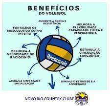

O vôlei foi criado nos Estados Unidos por um professor de educação física chamado William George Morgan, em 1895. Antes de inventar as primeiras regras, o seu principal objetivo era desenvolver um esporte em que os jogadores tivessem pouco contato físico entre eles
“Além de fortalecer o corpo e ajudar na perda de peso, o vôlei é benéfico para os sistemas respiratório e cardiovascular; trabalha bastante os membros superiores e inferiores, aumentando a flexibilidade e coordenação motora; estimula os neurônios; torna a pessoa mais atenta
